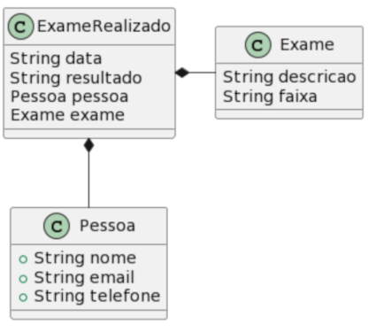
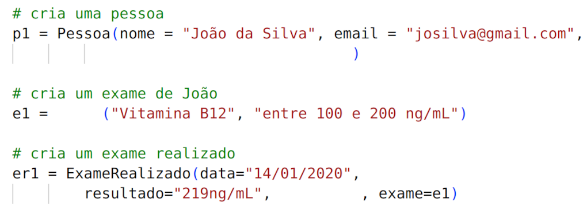
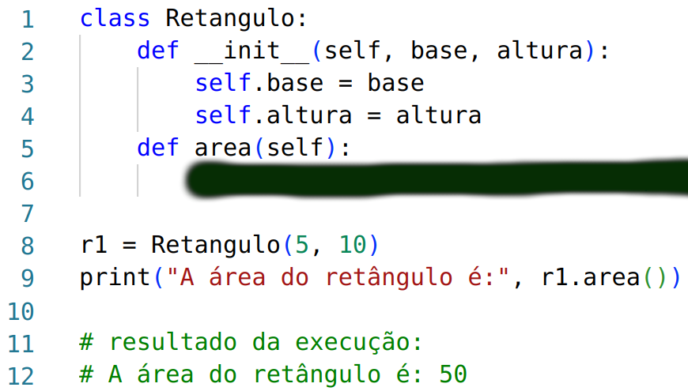
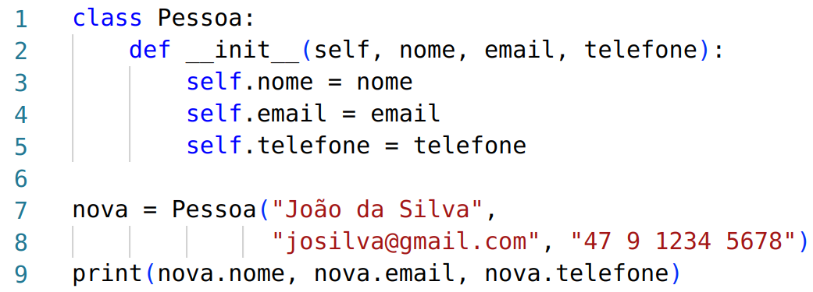
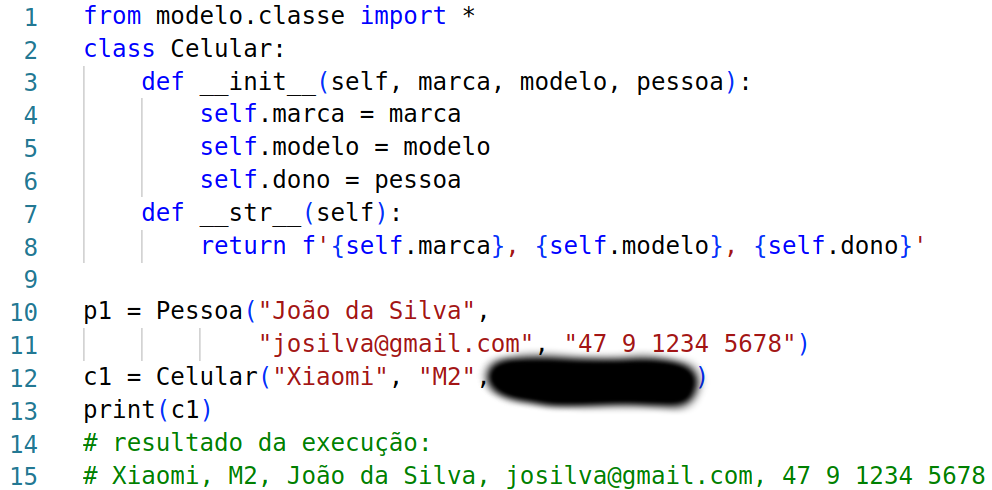
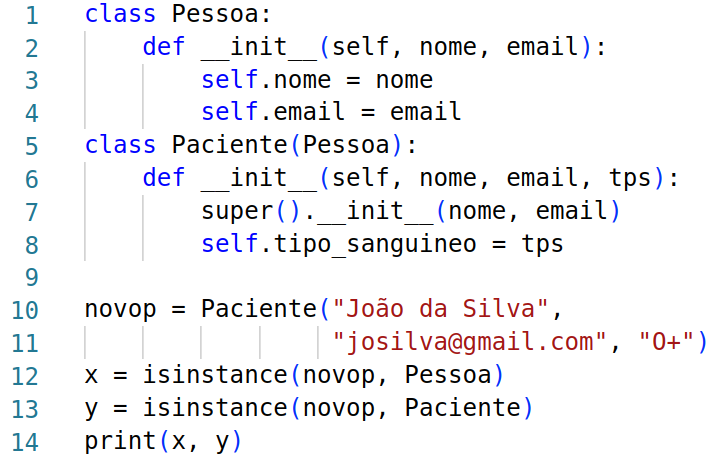
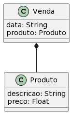
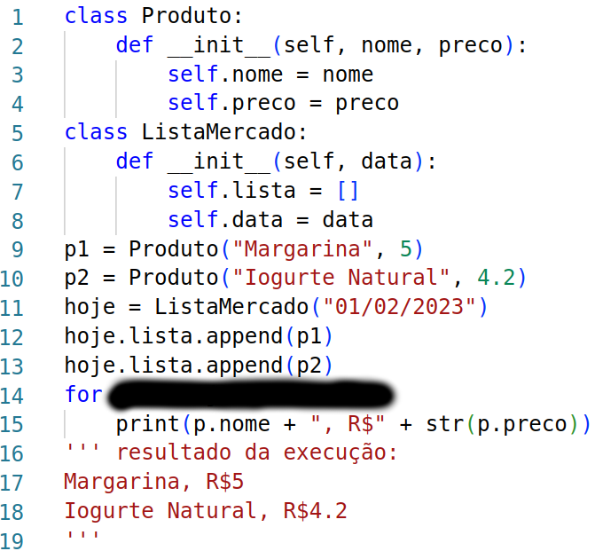
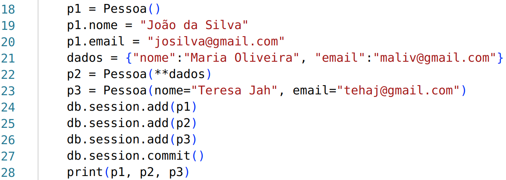
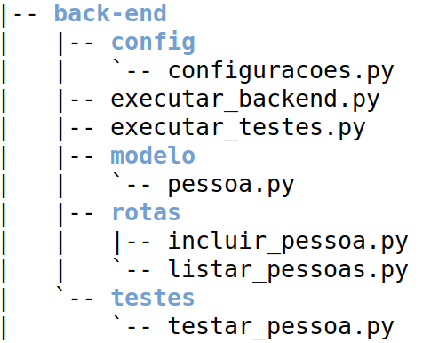

Questões
-
ID: 28Tipo: multiplaescolhaQuando uma classe é criada de forma a receber atributos e métodos de outra classe, ocorre reaproveitamento de código. Esse tipo de relação entre classes se chama:Alternativas:✓ CORRETAherançacomposiçãoagregaçãodependênciaassociação
-
ID: 29Tipo: multiplaescolhaExiste um diagrama UML que exibe relações de herança, composição e agregação. Esse diagrama é importante para visualizar de forma sintetizada (muitas vezes, em uma só página) o conjunto de entidades que fazem parte do sistema, bem com as relações existentes entre as entidades. Qual é o nome desse diagrama?Alternativas:herançacomposiçãoagregação✓ CORRETAdiagrama de classesdiagrama de atividadesdiagrama de navegação web
-
ID: 30Tipo: abertaConsidere as classes Pessoa e Celular. Uma pessoa pode ter um telefone celular, mas um celular pode ainda não pertencer a uma pessoa (ou seja, ele ainda não foi comprado por ninguém, mas já foi cadastrado no sistema). Que relação melhor descreve esse relacionamento entre as classes Pessoa e Celular?Resposta:agregação
-
ID: 31Tipo: completarA relação chamada ___ estabelece que atributos possam ser herdados entre classes. Já a relação chamada ___ estabelece que um objeto B não pode ser instanciado sem a existência de um outro objeto A, tal que B faça parte de A.Lacunas:herança|composição
-
ID: 32Tipo: completarConsidere uma classe Carro, que possui, dentre outras informações, um proprietário. As informações desse proprietário serão armazenadas por uma classe chamada Pessoa. Dessa forma, pode-se definir que um objeto do tipo Carro vai possuir um atributo chamado, por exemplo, ___. Nesse atributo deverá ser armazenado um objeto do tipo ___.Lacunas:proprietario|Pessoa
-
ID: 33Tipo: multiplaescolhaAo definir uma classe, é importante fazer um teste dessa classe para verificar o seu correto funcionamento. Qual das opções abaixo NÃO é essencial no processo de teste de classe?Alternativas:criação de objetopreenchimento de valores dos atributosexibição de valores dos atributos✓ CORRETAorganização do código em pastas/pacotesexecução do código de teste
-
ID: 37Tipo: completarConsidere três classes que armazenam informações sobre exames realizados por pessoas:
(QUESTÃO ANTIGA)
O trecho de código abaixo é responsável por instanciar um exame realizado.
(QUESTÃO ANTIGA)
Algumas partes de código estão faltando, forneça esses códigos. São eles: informar o telefone da pessoa criada: ___, informar a classe do objeto e1: ___, e associar o exame realizado à alguma pessoa: ___Lacunas:telefone = "47 99012 3232"|Exame|pessoa=p1 -
ID: 38Tipo: multiplaescolhaConsidere uma classe chamada Vendedor, que vai ser "filha" de uma classe chamada Pessoa. Essa relação se caracteriza como herança, na qual todo vendedor é uma pessoa. Qual das opções abaixo retrata corretamente a primeira linha da implementação da classe Vendedor, em python?Alternativas:✓ CORRETAVendedor(Pessoa)Vendedor => PessoaPessoa son_of Vendedorisinstance(Vendedor, Pessoa):Pessoa(Vendedor)
-
ID: 39Tipo: multiplaescolhaQuando existe uma classe filha e uma classe pai, relacionadas por herança, é possível que uma instância (objeto) da classe filha utilize atributos que existem na classe pai. O que é preciso fazer para permitir esse acesso?Alternativas:✓ CORRETANada, os atributos que existem na classe pai já estão disponíveis em instâncias da classe filhasuper()__str__()defisinstance
-
ID: 40Tipo: multiplaescolhaQuando existe uma classe filha e uma classe pai, relacionadas por herança, é possível que uma instância (objeto) da classe filha acesse métodos que existem em instâncias da classe pai. Que comando é preciso utilizar para permitir esse acesso?Alternativas:Nenhum, pois não é possível fazer esse acesso✓ CORRETAsuper()__str__()defisinstance
-
ID: 41Tipo: multiplaescolhaExiste um comando que retorna verdadeiro ou falso, dependendo se um determinado objeto é instância de uma certa classe. Por exemplo, deseja-se saber se um objeto associado a uma variável p é do tipo Vendedor. Qual das opções abaixo contém esse comando mencionado, no contexto apresentado?Alternativas:super()✓ CORRETAisinstance(p Vendedor)isinstance(p, Motorista)isinstance(p, Pessoa)type(p)class Vendedor(Pessoa):
-
ID: 46Tipo: abertaConsidere uma classe chamada Pessoa, com os atributos nome, idade e gênero. Forneça o comando que cria um objeto do tipo Pessoa em python. O nome da variável deve ser "nova".Resposta:nova = Pessoa("João", 45, "Masculino") ou nova = Pessoa(nome="João", idade=45, genero="Masculino")
-
ID: 55Tipo: abertaConsidere uma classe chamada Triangulo que possui o seguinte construtor:
def __init__(self, base, altura):
Forneça a linha de código que cria um objeto triângulo chamado t1, com base igual a 5 e altura igual a 10.Resposta:t1 = Triangulo(5, 10) -
ID: 59Tipo: completarO uso de herança entre classes permite que as classes filhas reaproveitem códigos existentes na classe pai. Para acessar o pai, existe um método específico chamado ___ que permite esse acesso. Esse método pode ser usado no método ___, responsável por expressar o objeto em formato textual. Outro método que pode reutilizar código do pai é o método construtor, chamado ___, que inicializa os atributos da classe, atribuindo valores dos parâmetros aos atributos.Lacunas:super | __str__ | __init__
-
ID: 63Tipo: multiplaescolhaQual das opções abaixo é um exemplo de uso de reflexão em java para a realização de persistência de dados?Alternativas:✓ CORRETAanotaçõesconstrutormétodo toStringinterfaceclasse abstrata
-
ID: 64Tipo: multiplaescolhaReflexão é também conhecida como YYY, pois o programa pode realizar computações a respeito dele mesmo. A opção que melhor descreve o termo YYY é:Alternativas:✓ CORRETAmetaprogramaçãointerfaceclasse abstrataanotaçõesmétodo construtor
-
ID: 65Tipo: multiplaescolhaAssinale a alternativa FALSA sobre aspectos gerais do reuso de software no contexto de programação orientada a objetos:Alternativas:✓ CORRETA O reuso de software em um projeto de sistema ocorre naturalmente quando se utiliza orientação a objetosManutenção de um sistema é uma forma de reuso de softwarePolimorfismo ajuda na manutenção de software pois reduz a quantidade de software a ser compreendido por novos programadoresA reescrita de classes antigas visando torná-las mais reusáveis é importanteAbstrações úteis são construídas a partir de problemas específicos que podem ser aplicados em cenários mais amplos
-
ID: 66Tipo: completarProgramas em java possuem a extensão ___, sendo que cada arquivo deve possuir o mesmo nome da classe que abriga. Os programas são compilados em um bytecode, e é criada a versão de arquivos com extensão ___. Para distribuição da aplicação, os programas em java podem ser empacotados em um arquivo de extensão ___.Lacunas:java | class | jar
-
ID: 67Tipo: completarUm código-fonte em java pode ser compilado utilizando-se o programa ___. Após a compilação, o arquivo resultante pode ser executado com um programa chamado chamado ___.Lacunas:javac | java
-
ID: 68Tipo: abertaProgramas em python podem ser criados de forma a serem armazenados em subpastas. Uma regra geral é que programas em nível superior conhecem os programas que estão no mesmo nível ou em níveis inferiores. Dessa forma, considere um programa chamado pessoa.py que contém uma classe chamada Pessoa e se encontra dentro de uma pasta chamada modelo. Há também um arquivo chamado TestarPessoa.py, que se encontra no mesmo nível da pasta modelo. Como é que deve ser o comando de importação da classe Pessoa pelo programa TestarPessoa.py?Resposta:from modelo.pessoa import *
-
ID: 69Tipo: abertaForneça o nome de dois frameworks de persistência que mapeiam objetos em bancos de dados relacionais (ORM: object-relacional mapping).Resposta:hibernate e sqlalchemy
-
ID: 70Tipo: multiplaescolhaConsidere o framework hibernate. Qual das anotações abaixo informa que uma classe deverá ser persistida em uma tabela?Alternativas:✓ CORRETA @Entity@Column@Id@GeneratedValue@ManyToMany
-
ID: 71Tipo: aberta
Considere uma classe chamada Retangulo, conforme mostra a figura abaixo.
(QUESTÃO ANTIGA)

Para calcular a área de um retângulo, devemos multiplicar a base pela altura. Forneça a linha de código que completa o método chamado area. Essa linha deve retornar a área do retângulo.
Resposta:return (self.base * self.altura) -
ID: 73Tipo: multiplaescolha
Abaixo está apresentada a classe Pessoa, juntamente com o código de teste da classe.
(QUESTÃO ANTIGA)
Qual opção melhor define a sequência de ações realizadas em um teste de classe?
Alternativas:✓ CORRETA criação do objeto, preenchimento de valores nos atributos e exibição dos dados do objetopreenchimento de valores nos atributos, exibição dos dados e criação do objetopreenchimento de valores nos atributos e exibição dos dadospreenchimento de valores nos atributos, criação do objeto e exibição dos dadoscriação do objeto e exibição dos dados do objetocriação do objeto, exibição dos dados do objeto e preenchimento de valores nos atributos -
ID: 74Tipo: aberta
Abaixo está apresentada a classe Pessoa, juntamente com o código de teste da classe.
(QUESTÃO ANTIGA)Suponha que essa classe está dentro de um arquivo chamado pessoa.py. Outro programa chamado testar_pessoa.py está na mesma pasta e deseja usar a classe Pessoa, como se a classe estivesse no próprio programa testar_pessoa.py. Forneça a linha de código que realiza essa necessidade.
Resposta:from pessoa import * -
ID: 78Tipo: aberta
Considere o código de uma classe que implementa um celular. Considere também que um celular pertence a uma pessoa, ou seja, tem um dono. No código de teste dessas classes, é criado um celular da Xiaomi cujo dono é João da Silva (ver figura a seguir).
(QUESTÃO ANTIGA)
Qual é o conteúdo que deve ser informado no espaço pintado com a cor preta?
Resposta:p1 -
ID: 81Tipo: multiplaescolha
Considere as classes Pessoa e Paciente descritas e testadas abaixo. Qual das informações abaixo é FALSA?
(QUESTÃO ANTIGA)
Alternativas:✓ CORRETA A variável x é uma instância de PessoaOcorre uma herança entre as classes Paciente e PessoaA variável novop é uma instância de PessoaA variável novop é uma instância de PacienteA classe Pessoa não possui o atributo tipo_sanguineoO programa vai exibir os seguintes valores: True True -
ID: 82Tipo: aberta
Considere que as classes Produto e Venda, exibidas na figura abaixo, estão implementadas em python. Forneça o código (no máximo 2 linhas) que crie um objeto venda para representar a venda de uma escova de dentes azul realizada no dia 01/02/2023, no valor de 11 reais.
(QUESTÃO ANTIGA)
Resposta:p1 = Produto("Escova de dentes azul", 11) venda = Venda("01/02/2023", p1) -
ID: 84Tipo: aberta
Considere uma classe Produto e uma classe ListaMercado (ver figura abaixo). Produtos são criados (linhas 9 e 10) e adicionados em uma lista (linhas 12 e 13). Qual é o código que completa o espaço pintado em cor preta? A repetição que existe na linha 14 precisa percorrer os produtos que estão no atributo lista do objeto que é criado no teste. Não repita a palavra "for" na sua resposta.
(QUESTÃO ANTIGA)
Resposta:p in hoje.lista: -
ID: 96Tipo: multiplaescolha
Considere o trecho de código abaixo, que instancia três objetos da classe persistente Pessoa. Para a persistência foi utilizada a biblioteca flask_sqlalchemy.
(QUESTÃO ANTIGA)
Sobre a forma de criar objetos e colocar valores nos atributos, qual das alternativas abaixo é VERDADEIRA?
Alternativas:✓ CORRETA As formas como foram criadas p1, p2 e p3 são válidasApenas a forma como foi criada p1 é válidaApenas a forma como foi criada p2 é válidaApenas a forma como foi criada p3 é válidaApenas as forma como foram criadas p1 e p2 são válidasApenas as forma como foram criadas p1 e p3 são válidasApenas as forma como foram criadas p2 e p3 são válidas -
ID: 97Tipo: completar
Considere que os arquivos de um back-end em python/flask estão organizados conforme a hierarquia mostrada na figura a seguir. Complete o texto da lacuna abaixo.
(QUESTÃO ANTIGA)

O arquivo pessoa.py contém a implementação da classe Pessoa, e esse arquivo está dentro da pasta modelo. O programa testar_pessoa.py, que está dentro da pasta testes, contém uma função que testa a classe Pessoa, criando um objeto desse tipo. Para que o testar_pessoa.py possa usar a classe Pessoa, é preciso que um terceiro programa chamado ___ invoque a função que está dentro do testar_pessoa.py, e assim seja possível que o testar_pessoa.py use a classe Pessoa. A hierarquia exibida dentro da pasta backend contém, numericamente, ___ subdiretórios, ___ arquivos dentro de subpastas e ___ arquivos na pasta principal (back-end).
Lacunas:executar_testes.py|4|5|2 -
ID: 100Tipo: aberta
Considere a seguinte linha de comando:
lista_jsons = [x.json() for x in dados]
Essa linha percorre a variável "dados", invocando o método json() para cada elemento da lista "dados". Os elementos são acumulados na lista "lista_jsons". Forneça um código equivalente usando um "for" simples. A resposta deve possuir 3 linhas de código.
Resposta:lista_jsons = [] for x in dados: lista_jsons.append(x.json()) -
ID: 183Tipo: multiplaescolhaNo contexto do reflexão computacional, há um comportamento em programas referente a conexão entre sistema e domínio no qual as estruturas internas do sistema (exemplo: variáveis) e o domínio representado pelo sistema (exemplo: braço de um robô). A estrutura e o domínio estão ligados de forma que, se um deles muda, isso leva a um efeito correspondente no outro (ou seja, o outro também muda). Qual é o nome do termo que identifica esse comportamento descrito?Alternativas:✓ CORRETA conexão causalherança múltiplaclasse abstratameta-dadosmeta-objetoconsistência3-KRSencapsulamentoconectivos lógicos
-
ID: 184Tipo: abertaO código a seguir está escrito em Java e tem uma função específica: descobrir se um determinado método é um método "getter".
private static boolean isGetter(Method m) { return m.getName().startsWith("get") && m.getReturnType() != void.class && m.getParameterTypes().length == 0; }Sobre esse código, explique o significado de cada condição que está envolvida no processo de decisão sobre o retorno a ser dado pelo método isGetter (verdadeiro ou falso).Resposta:A primeira condição verifica se o nome do método começa com "get"; a segunda condição verifica se o método possui retorno diferente de void; a terceira condição verifica se o método não possui parâmetros. -
ID: 188Tipo: multiplaescolhaQual das opções a seguir descreve melhor o termo Pull-up de método? Essa ação de refatoramento é realizada visando melhorar a reusabilidade de códigos.Alternativas:✓ CORRETAMover um método de uma classe filha para uma classe paiMover um método para uma classe utilitária para que possa ser utilizada por outras classesMover um trecho de código para um método, e substituir o trecho de código pela chamada do métodoRefatorar em método visando melhorar o seu desempenho em termos de velocidade de processamentoRefatorar em método visando melhorar o seu desempenho em termos de ordem de complexidade
-
ID: 189Tipo: multiplaescolhaUm programa pode ser desenvolvido em módulos. Entende-se por medida de acoplamento a quantidade de vínculos entre os módulos (dependências externas as módulo). A coesão é maior na medida em que o módulo realiza uma função específica e possui a menor complexidade possível. Qual das opções a seguir desejável?Alternativas:✓ CORRETAAlta coesão e baixo acoplamentoAlta coesão e alto acoplamentoBaixa coesão e alto acoplamentoBaixa coesão e baixo acoplamento
-
ID: 190Tipo: abertaNa linguagem Java, há um método chamado toString; esse método é equivalente ao método __str__ no Python. Em C++ não existe esse método padrão para ser sobrescrito, mas há outras opções. O que esses métodos fazem?Resposta:Retornam em formato textual os atributos de um objeto.
-
ID: 191Tipo: abertaSobre classes abstratas e interfaces, forneça a SOMA das opções ERRADAS: 1) Classes abstratas podem ser reutilizadas por meio de herança 2) Interfaces não possuem atributos 4) Classes abstratas não podem possuir métodos concretos 8) Interfaces não podem possuir métodos concretos 16) Classes abstratas podem possuir métodos abstratos 32) Interfaces possuem apenas métodos abstratosResposta:4
-
ID: 439Tipo: multiplaescolhaConsidere o código abaixo:
class Pessoa:
def __init__(self, nome, email):
self.nome = nome
self.email = email
self.celulares = []
class Celular:
def __init__(self, marca, numero):
self.marca = marca
self.numero = numero
p1 = Pessoa("Maria Oliveira", "ma@gmail.com")
c1 = Celular("Samsung", "9876-5432")
Qual é o comando para informar que o celular Samsung pertence à Maria?Alternativas:✓ CORRETAp1.celulares.append(c1)p1.append(c1)c1.pessoa = p1Celular.pessoa = p1p1.celular = c1Celular.pessoas.append(p1)Pessoas.celulares.append(p1)p1.celulares = c1p1 = c1c1 = p1c1.celulares.append(c1)p1.celulares.append(p1)c1.celulares.append(p1)p1.telefone = c1 -
ID: 442Tipo: multiplaescolhaConsidere o código abaixo:
class Celular:
def __init__(self, marca : str, numero : str):
self.marca = marca
self.numero = numero
class Pessoa:
def __init__(self, nome : str, email : str, celulares : list[Celular]):
self.nome = nome
self.email = email
self.celulares = celulares
p1 = Pessoa("Maria Oliveira", "ma@gmail.com", [])
c1 = Celular("Samsung", "9876-5432")
p1.celulares.append(c1)
Qual dos diagramas a seguir melhor representa o código exibido?Alternativas:✓ CORRETA![]()
![]()
![]()
![]()
![]()
-
ID: 443Tipo: completarConsidere o código abaixo:
class Celular:
def __init__(self, marca : str, numero : str):
self.marca = marca
self.numero = numero
class Pessoa:
def __init__(self, nome : str, email : str, celulares : list[Celular]):
self.nome = nome
self.email = email
self.celulares = celulares
p1 = Pessoa("Maria Oliveira", "ma@gmail.com", [])
c1 = Celular("Samsung", "9876-5432")
p1.celulares.append(c1)
Complete o código a seguir para criar outro telefone e vincular o novo telefone à Maria:
c2 = Celular("Morotola", "9 5544 3322")
p1.___.append(___)Lacunas:celulares|c2 -
ID: 444Tipo: completarO código abaixo mostra um exemplo de herança. Complete as lacunas para que o código funcione corretamente.
class Veiculo:
def __init__(self, placa, cor):
self.placa = placa
self.cor = cor
class Carro(Veiculo):
def __init__(self, placa, cor, ___):
___.__init__(placa, cor)
self.portas = portas
meu_carro = Carro("ABC-1234", "Vermelho", 4)
print(f"{meu_carro.placa},{meu_carro.cor},{meu_carro.portas}")Lacunas:super()|portas